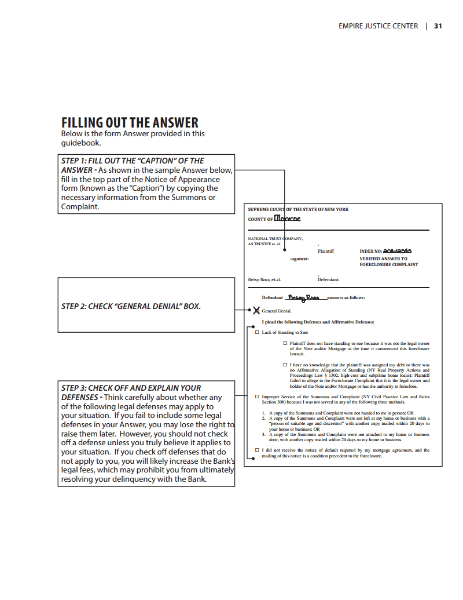
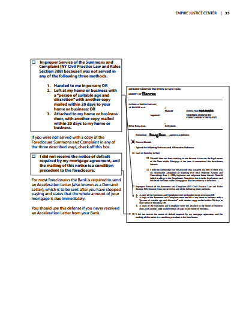
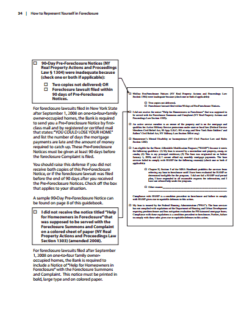
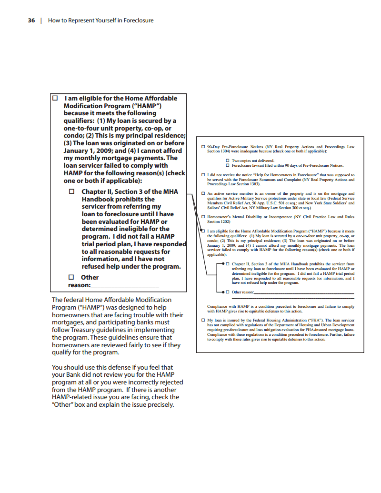
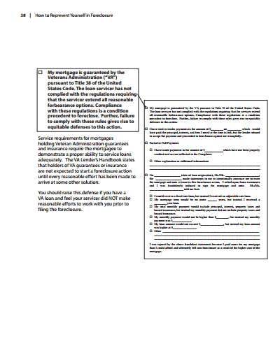
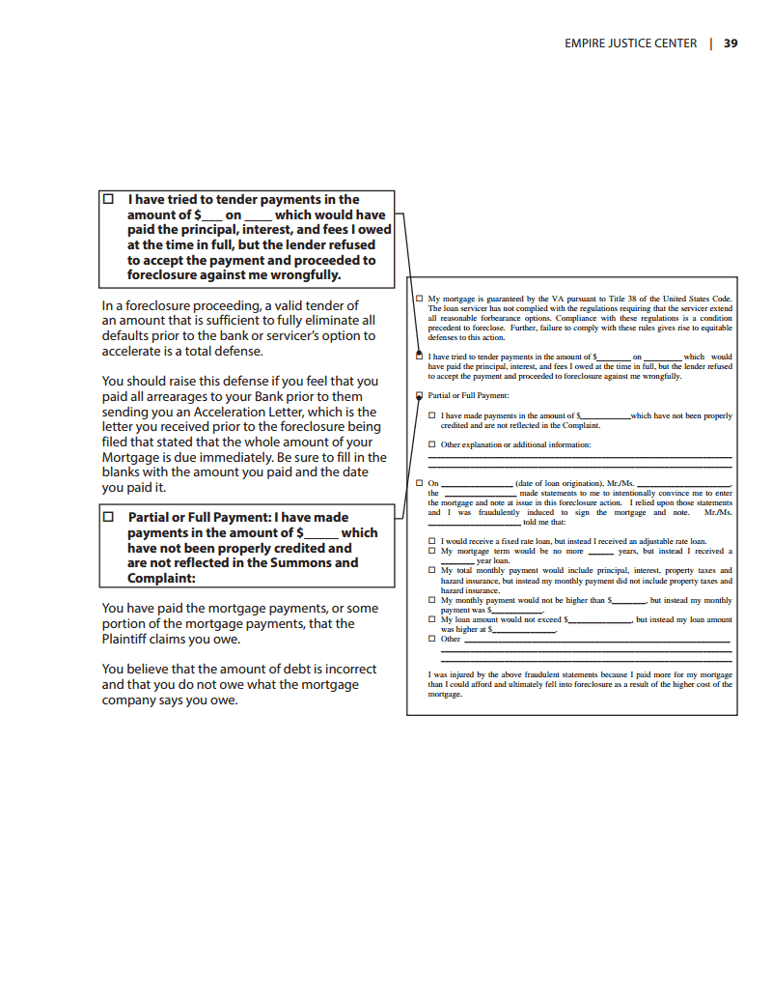
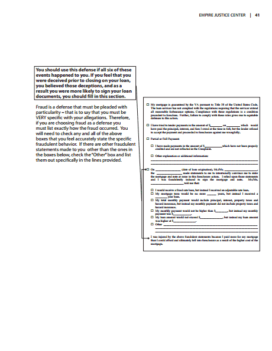
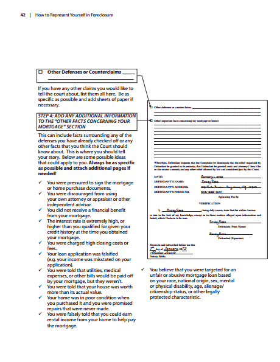
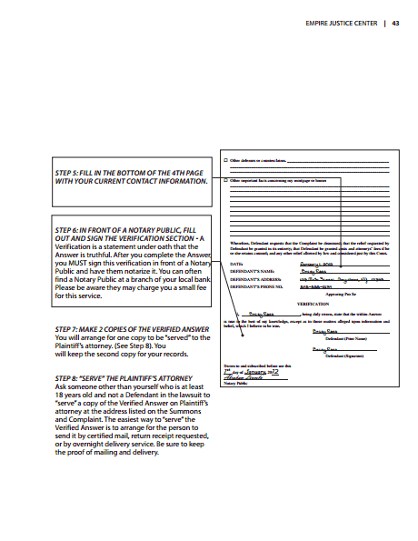

An Answer is a written response to the Complaint, where you list any and all of your defenses to the foreclosure, as well as any counterclaims you may have against the Bank. This section of the guidebook will explain step-by-step how to write and file an Answer if you can’t find an attorney to help you
Settlement conference-
What is An Answer?
-
Should I file an Answer?
If you have received a Summons and Complaint, you have the right to serve and file an Answer to the Complaint. This will help you preserve your legal rights and guarantee that you receive notice of all future actions in the court case, including the sale of your home. If you don’t file an Answer, the judge may enter a “default” judgment against you (which means you did not submit an Answer and therefore are not contesting the Bank’s legal right to foreclosure). In addition, if you don’t fi le an Answer you will probably lose your right to raise any defenses to the foreclosure down the road.
Sometimes, however, it is not helpful to file an Answer. If you are unable to find an attorney to help, you will have to make that choice. There are two possible reasons why you may NOT want to file an Answer.
- You may not have any legal defenses or claims to the foreclosure
- If you file an Answer and are unsuccessful in convincing the judge that you are correct in your claims, you will be responsible for the leaga fees that the Bank must pay to successfully pursue the foreclosure. This willl increase the amount of money you owe the Bank. This increase could ultimately make it harder for you to obtain a loan modifi cation or some other type of workout.
of money you owe the Bank. This increase could ultimately make it harder for you to obtain a loan modifi cation or some other type of workout.
We Highly recommend that you file either an Answer or a Notice of Appearance early in the foreclosure proceeding.
This is a general guide through the foreclosure process. Each person’s situation is unique, and therefore consultation with an attorney is recommended,if possible.
-
When should you file an Answer?
- If you were served personally (the court papers were handed to you in person), you have 20 days from the date of service (the date you were handed the papers) to file your Answer.
- • If you were served by mail (you didn’t receive a copy personally but instead received the foreclosure summons only by mail), you have 30 days to file your Answer.
If it has been more than 30 days since you were served, you may still be able to file an Answer but you will need to ask permission from the Court. One way to approach this situation is to draft the Answer, try to fi le it with the Court and serve it on the Bank’s attorney. The Bank’s attorney may try to claim that your Answer is too late to accept, but the Court also may decide to allow you to fi le your Answer, so it is worth trying.
-
Where can you find the information you need to respond?
The information you need to fill in your Answer, comes from the Summons and Complaint you received, your mortgage papers, and your personal experience.
Sample SummonsDo not wait until the last day to file an Answer- writing and filing an Answer takes time!
-
FILLING OUT THE ANSWER
STEP 1: FILL OUT THE "CAPTION" OF THE ANSWER-As shown in the sample Answer below, fill in the top part of the Notice of Apperance form(known as the "Caption") by copying the necessary information from the Summons or Complaint.
STEP 2: CHECK "General DENIAL" Box.
STEP 3: CHECK OFF AND EXPLAIN YOUR DEFENSES-Think carefully about whether any of the following legal defenses may apply to your situation. If you fail to include some legal defenses in your Answer, you may lose the right to raise them later. However, you should not check off a defense unless you truly believe it applies to your situation. If you check off defenses that do not apply to you, you will likely increase the Bank’s legal fees, which may prohibit you from ultimately resolving your delinquency with the Bank.
Filling out answer× - Lack of Standing to Sue:
A Foreclosure Plaintiff (the Bank) must prove that it has the right to foreclose, known as “standing”, by showing that it is the owner of the Note and Mortgage when it starts the lawsuit. You should check this box if you check off EITHER of the two boxes below related to standing. If you don’t include this claim, you may not be able to raise it later. So, if you believe that the Plaintiff may not own your Note and Mortgage, raise this defense to be safe.
- Plaintiff does not have standing to sue because it was not the legal owner of the Note and/or Mortgage at the time it commenced this foreclosure lawsuit.
Check this first box if you have checked at your county clerk’s office and discovered that the Plaintiff listed on your Summons and Complaint do not match the party that is supposed to have ownership rights according to the publicly filed documents in the Clerk’s office. (Some counties are available online, while some you must visit in person.)
- I have no knowledge that the plaintiff was assigned my debt or there was no Affirmative Allegation of Standing (NY Real Property Actions and Proceedings Law § 1302, high-cost and subprime home loans): Plaintiff failed to allege in the Foreclosure Complaint that it is the legal owner and holder of the Note and/or Mortgage or has the authority to foreclose.
Check this second box if you believe that the Bank does not have standing because the Bank did not state they had standing in their Complaint.
Under a 2008 New York State Law, foreclosure Plaintiffs are required to follow additional rules for certain types of mortgages called “high-cost,” “subprime,” and “non-traditional” mortgages. The simplest way to know whether you have a high-cost, subprime, or non-traditional mortgage is that you should have received written notice during the loan closing or foreclosure
- Improper Service of the Summons and Complaint (NY Civil Practice Law and Rules Section 308) because I was not served in any of the following three methods.
- Handed to me in person; OR
- Left at my home or business with a “person of suitable age and discretion” with another copy mailed within 20 days to
- Attached to my home or business door, with another copy mailed within 20 days to my home or business.
If you were not served with a copy of the Foreclosure Summons and Complaint in any of the three described ways, check off this box.
- I did not receive the notice of default required by my mortgage agreement, and the mailing of this notice is a condition precedent to the foreclosure.
For most foreclosures the Bank is required to send an Acceleration Letter (also known as a Demand Letter), which is to be sent after you have stopped paying and states that the whole amount of your mortgage is due immediately.
You should use this defense if you never received an Acceleration Letter from your Bank.
Filling out an Answer part 2×  -
90-Day Pre-Foreclosure Notices
- 90-Day Pre-Foreclosure Notices (NY
Real Property Actions and Proceedings
Law § 1304) were inadequate because
(check one or both if applicable):
- Two coppies not delivered; Or
- Foreclosure lawsuit filled within 90 days of Pre-Foreclosure Notices
I did not receive the notice titled “Help for Homeowners in Foreclosure” that was supposed to be served with the Foreclosure Summons and Complaint on a colored sheet of paper (NY Real Property Actions and Proceedings Law Section 1303) (amended 2008).
An active service member is an owner of the property and is on the mortgage and qualifies for Active Military Service protections under state or local law (Federal Service Members Civil Relief Act, 50 App. U.S.C. 501 et seq.; and New York State Soldiers’ and Sailors’ Civil Relief Act, NY Military Law Section 300 et seq.)
Homeowner’s Mental Disability or Incompetence (NY Civil Practice Law and Rules Section 1202)
- I am eligible for the Home Affordable Modification Program (“HAMP”) because it meets the following qualifiers: (1) My loan is secured by a one-to-four unit property, co-op, or condo; (2) This is my principal residence; (3) The loan was originated on or before January 1, 2009; and (4) I cannot afford my monthly mortgage payments. The loan servicer failed to comply with HAMP for the following reason(s) (check one or both if applicable):
- Chapter II, Section 3 of the MHA Handbook prohibits the servicer from referring my loan to foreclosure until I have been evaluated for HAMP or determined ineligible for the program. I did not fail a HAMP trial period plan, I have responded to all reasonable requests for information, and I have not refused help under the program.
- Other
-
reason: ____________
- My loan is insured by the Federal Housing Administration (“FHA”). The loan servicer has not complied with regulations of the Department of Housing and Urban Development requiring pre-foreclosure and loss mitigation evaluation for FHA-insured mortgage loans. Compliance with these regulations is a condition precedent to foreclosure. Further, failure to comply with these rules gives rise to equitable defenses to this action.
For foreclosure lawsuits fi led in New York State after September 1, 2008 on one-to-four-family owner-occupied homes, the Bank is required to send you a Pre-Foreclosure Notice by fi rst- class mail and by registered or certified mail that states: “YOU COULD LOSE YOUR HOME” and list the number of days the mortgage payments are late and the amount of money required to catch up. These Pre-Foreclosure Notices must be given at least 90 days before the foreclosure Complaint is filed.
You should raise this defense if you did not receive both copies of this Pre-Foreclosure Notice, or if the foreclosure lawsuit was filed before the end of 90 days after you received the Pre-Foreclosure Notices. Check off the box that applies to your situation.
A sample 90-Day Pre-Foreclosure Notice can be found on page 8 of this guidebook.
For foreclosure lawsuits filed after September 1, 2008 on one-to-four family owner- occupied homes, the Bank is required to include a Notice of “Help for Homeowners in Foreclosure” with the Foreclosure Summons and Complaint. This notice must be printed in bold, large type and on colored paper.
90-Day Pre-Foreclosure Notices part 1× Active-duty members of the armed forces, National Guard and reservists, and their dependents and co-debtors have special rights under federal and New York State laws to interest rate reductions on mortgages and other debts, to request a stay of foreclosure, and to avoid a tax foreclosure sale.
Homeowners who are serving active military duty and are facing foreclosure should advise their mortgage lender, servicer, and the court in writing, and immediately seek assistance from a Judge Advocate General (JAG) Corps or other attorney.
If you are working with a homeowner whom you believe cannot defend himself or herself due to limited mental competence, you should ask the court to appoint a “Guardian Ad Litem” to represent the homeowner’s interests during the lawsuit.
In addition, if you believe that the homeowner was not mentally competent at the time he or she signed the mortgage loan, you should describe in detail the timing and evidence of the homeowner’s incompetence, and immediately seek assistance from an attorney.
90-Day Pre-Foreclosure Notices part 2The federal Home Affordable Modification Program (“HAMP”) was designed to help homeowners that are facing trouble with their mortgages, and participating banks must follow Treasury guidelines in implementing the program. These guidelines ensure that homeowners are reviewed fairly to see if they qualify for the program.
You should use this defense if you feel that your Bank did not review you for the HAMP program at all or you were incorrectly rejected from the HAMP program. If there is another HAMP-related issue you are facing, check the “Other” box and explain the issue precisely.
90-Day Pre-Foreclosure Notices part 3× Service requirements for mortgages holding FHA guarantees and insurance require that every reasonable effort has been made to arrive at some other solution before the filing of a foreclosure.
You should raise this defense if you have an FHA loan and feel your servicer did NOT make reasonable efforts to work with you before filing the foreclosure.
90-Day Pre-Foreclosure Notices part 4 - 90-Day Pre-Foreclosure Notices (NY
Real Property Actions and Proceedings
Law § 1304) were inadequate because
(check one or both if applicable):
-
My Mortgage
- My mortgage is guaranteed by the Veterans Administration (“VA”) pursuant to Title 38 of the United States Code. The loan servicer has not complied with the regulations requiring that the servicer extend all reasonable forbearance options. Compliance with these regulations is a condition precedent to foreclose. Further, failure to comply with these rules gives rise to equitable defenses to this action.
Service requirements for mortgages holding Veteran Administration guarantees and insurance require the mortgagee to demonstrate a proper ability to service loans adequately. The VA Lender’s Handbook states that holders of VA guarantees or insurance are not expected to start a foreclosure action until every reasonable effort has been made to arrive at some other solution.
You should raise this defense if you have a VA loan and feel your servicer did NOT make reasonable efforts to work with you prior to filing the foreclosure.
My Mortage part 1× - have tried to tender payments in the amount of $___ on ____ which would have paid the principal, interest, and fees I owed at the time in full, but the lender refused to accept the payment and proceeded to foreclosure against me wrongfully.
In a foreclosure proceeding, a valid tender of an amount that is sufficient to fully eliminate all defaults prior to the bank or servicer’s option to accelerate is a total defense.
You should raise this defense if you feel that you paid all arrearages to your Bank prior to them sending you an Acceleration Letter, which is the letter you received prior to the foreclosure being filed that stated that the whole amount of your Mortgage is due immediately. Be sure to fill in the blanks with the amount you paid and the date you paid it.
- Partial or Full Payment: I have made payments in the amount of $_____ which have not been properly credited and are not reflected in the Summons and Complaint:
You have paid the mortgage payments, or some portion of the mortgage payments, that the Plaintiff claims you owe.
>You believe that the amount of debt is incorrect and that you do not owe what the mortgage company says you owe.
My Mortage part 2× - On ____ (date of loan origination), Mr./Ms. ____, the ______ made statements to me to intentionally convince me to enter the mortgage and note at issue in this foreclosure action. I relied upon those statements and I was fraudulently induced to sign the mortgage and note. Mr./Ms.__________ told me that:
- I would receive a fixed rate loan, but instead I received an adjustable rate loan.
- My mortgage term would be no more____ years, but instead I received a____ year loan.
- My total monthly payment would include principal, interest, property taxes and hazard insurance, but instead my monthly payment did not include property taxes and hazard insurance.
- My monthly payment would not be higher than $______, but instead my monthly payment was $______.
- My loan amount would not exceed $______, but instead my loan amount was higher at $______.
- Other __________________________
I was injured by the above fraudulent statements because I paid more for my mortgage than I believed I could afford and ultimately fell into foreclosure as a result of the higher cost of the mortgage.
For a fraud to have occurred there MUST have been six things that happened:
- There was a misrepresentation of fact by another party (frequently a mortgage broker or a representative from the bank) to you;
- The statement was untrue;
- The speaker knew the statement was untrue;
- The speaker was trying to deceive you;
- You relied on the untrue statement; AND
- You were injured (injured can mean financially injured) by the untrue statement.
You should use this defense if all six of these events happened to you. If you feel that you were deceived prior to closing on your loan, you believed those deceptions, and as a result you were more likely to sign your loan documents, you should fill in this section.
Fraud is a defense that must be pleaded with particularity – that is to say that you must be VERY specific with your allegations. Therefore, if you are choosing fraud as a defense you must list exactly how the fraud occurred. You will need to check any and all of the above boxes that you feel accurately state the specific fraudulent behavior. If there are other fraudulent statements made to you other than the ones in the boxes below, check the “Other” box and list them out specifically in the lines provided.
My Mortage part 4×  -
Other defenses or counterclaims
Other Defenses or Counterclaims _________________________
If you have any other claims you would like to tell the court about, list them all here. Be as specific as possible and add sheets of paper if necessary.
STEP 4: ADD ANY ADDITIONAL INFORMATION TO THE “OTHER FACTS CONCERNING YOUR MORTGAGE” SECTION
This can include facts surrounding any of the defenses you have already checked off or any other facts that you think the Court should know about. This is where you should tell your story. Below are some possible ideas that could apply to you. Always be as specific as possible and attach additional pages if needed!
- You were pressured to sign the mortgage or home purchase documents.
- You were discouraged from using your own attorney or appraiser or other independent advisor.
- You did not receive a financial benefit from your mortgage.
- The interest rate is extremely high, or higher than you qualified for given your credit history at the time you obtained your mortgage.
- You were charged high closing costs or fees.
- Your loan application was falsified (e.g. your income was misstated on your application).
- You were told that utilities, medical expenses, or other bills would be paid off by your mortgage, but they weren’t.
- You were told that your house was worth more than its actual value.
- Your home was in poor condition when you purchased it and you were promised repairs that were never made.
- You were falsely told that you could earn rental income from your home to help pay the mortgage.
- You believe that you were targeted for an unfair or abusive mortgage loan based on your race, national origin, sex, mental or physical disability, age, alienage/ citizenship status, or other legally protected characteristic.
× STEP 5: FILL IN THE BOTTOM OF THE 4TH PAGE WITH YOUR CURRENT CONTACT INFORMATION.
STEP 6: IN FRONT OF A NOTARY PUBLIC, FILL OUT AND SIGN THE VERIFICATION SECTION - A Verification is a statement under oath that the Answer is truthful. After you complete the Answer, you MUST sign this verification in front of a Notary Public and have them notarize it. You can often find a Notary Public at a branch of your local bank. Please be aware they may charge you a small fee for this service.
STEP 7: MAKE 2 COPIES OF THE VERIFIED ANSWER You will arrange for one copy to be “served” to the Plaintiff’s attorney. (See Step 8). You will keep the second copy for your records.
STEP 8: “SERVE” THE PLAINTIFF’S ATTORNEY Ask someone other than yourself who is at least 18 years old and not a Defendant in the lawsuit to “serve” a copy of the Verified Answer on Plaintiff’s attorney at the address listed on the Summons and Complaint. The easiest way to “serve” the Verified Answer is to arrange for the person to send it by certified mail, return receipt requested, or by overnight delivery service. Be sure to keep the proof of mailing and delivery.
My defenses or counterclaims part 2×  -
Affidavit of Service
STEP 9: FILL OUT THE AFFIDAVIT OF SERVICE The person who “served” the copy of the Verified Answer on the Plaintiff’s attorney must fill out the Affidavit of Service in front a Notary Public and have it notarized. You can often find a Notary Public at a branch of your local bank. Please be aware they may charge a small fee for this service.
STEP 10: FILE THE VERIFIED ANSWER AND AFFIDAVIT OF SERVICE AT THE COUNTY CLERK. Bring the original Verified Answer, the extra copy of the Verified Answer, the notarized Affidavit of Service, and a copy of the notarized Affidavit of Service to your County Clerk’s office. (See list of the local area court clerks included in the front folder pocket of this guide.) At the County Clerk’s office, state that you wish to file an Answer. Be sure to ask the clerk to “time-stamp” the original Verified Answer, the Affidavit of Service and the copy of the Verified Answer, so that you have proof of the date and time you filed your Answer. Keep for your records a time stamped copy of the Verified Answer and a copy of the Affidavit of Service.
STEP 11: APPEAR AT YOUR SETTLEMENT CONFERENCE
Affidavit Of Service


.png)
.png)
.png)